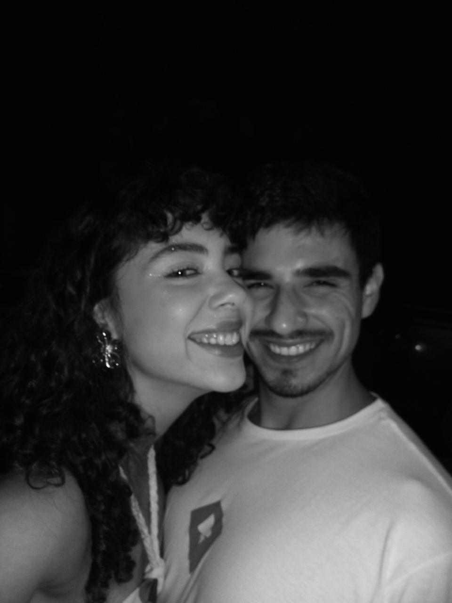

faixa 01
Until I Found You
Stephen Sanchez
“I said, "I would never fall unless it's you I fall into"
I was lost within the darkness,
but then I found you.”
com amor,
seu amor
feliz 6 meses
15 · 02

faixa 01
Stephen Sanchez
“I said, "I would never fall unless it's you I fall into"
I was lost within the darkness,
but then I found you.”
faixa 02
Taylor Swift
“Even in my worst times,
you could see the best of me.
Even in my worst lies,
You saw the truth in me.”
faixa 03
Ricchi e Poveri
“Che confusione, sarà perché ti amo.
È un'emozione che cresce piano piano,
Stringimi forte e stammi più vicino.
Se ci sto bene, sarà perché ti amo.”
MY #1
FOREVER
MY BEST FRIEND
MY LOVER